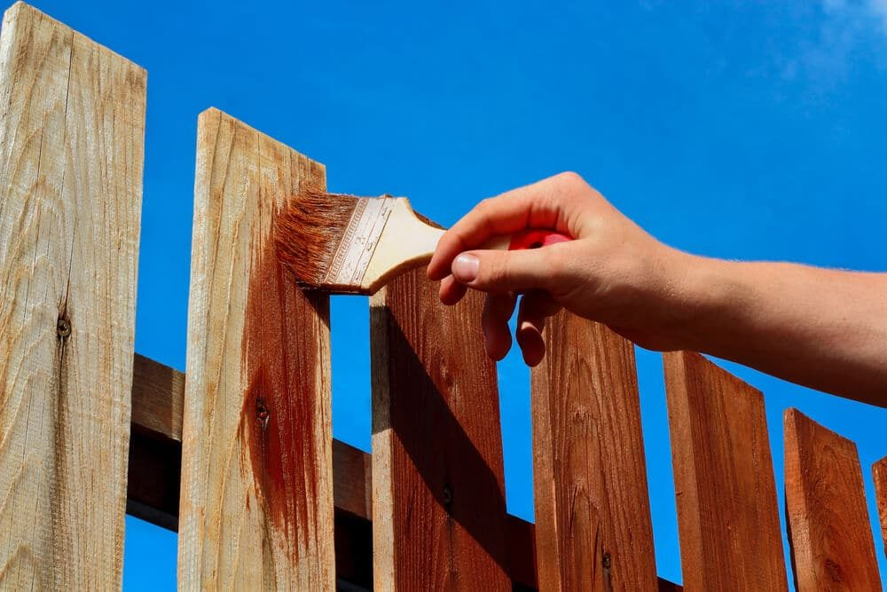

In This Guide
- Rot, rust, loose fasteners, and weak posts are the usual reasons fences lean and fail, and each one has a fix.
- Seal wood, use treated framing, and choose exterior-rated screws so the fence resists moisture and insects.
- Set posts on gravel, keep wood out of wet soil, and add bracing where wind or gates pull hardest.
- Inspect the fence at least once a year and after storms, and call a professional when a repair goes beyond basic tools.
No matter how good a fence looked on installation day, time and weather go to work on it right away. Rain, humidity, wind, soft ground, and insects wear a fence down, and sooner or later posts lean and boards weaken. The right steps slow that process down a lot.
This guide from Big Easy Fence covers practical ways to strengthen a fence made of wood, steel, aluminum, or wrought iron, so it stays upright, sturdy, and good-looking longer.
Start With the Wood
Stain or Seal Wood Fences

A wood fence lasts longest when it is sealed or stained, including every notch, cut end, and frame board. That protects it from moisture and sunlight and keeps it looking fresh. The finish does not last forever, so reapply it when it wears thin. A rule of thumb is every three to five years, but wet, humid Louisiana weather pushes toward the shorter end. The best test is a splash of water. If it stops beading and soaks in, the fence is ready for another coat, and so is one where the finish is flaking.
Be careful with paint. A painted fence can look great, but once paint cracks or peels, it can trap moisture against the wood and speed up rot. Many people prefer a penetrating stain for that reason.
Use Strong, Treated Framing
A strong fence starts with a strong frame. Pressure-treated lumber is infused with preservatives that protect it from rot and insects, which makes it a good choice for posts and rails. When you cut it, seal the cut ends with a preservative made for the job, since the fresh cut exposes untreated wood.
Fasten With Screws
Nails work loose over time, especially as wood swells and shrinks with the weather. Exterior-rated screws hold much better. Stainless steel or coated screws cost more, but they resist rust and do not leave dark streaks on the wood. Modern treated lumber can also corrode ordinary fasteners, so use ones rated for it.
Get the Posts Right
If the posts fail, the whole fence fails, which is why they deserve the most attention.
Use Gravel for Drainage
Water that collects at the bottom of a post hole is the enemy. A layer of gravel under the post gives water a place to drain, and it helps keep the post end from sitting in wet soil.
Keep Wood Off the Ground
Wood soaks up moisture from contact with soil. Set posts so the fence boards stay an inch or two above the ground, and keep mulch, dirt, and plants from piling up against them. A gap at the bottom keeps them drier and lets air move through.
Set Posts in Concrete
Concrete gives posts a firm base that holds against wind and soft ground. Slope the top of the concrete away from the post so rain runs off instead of pooling around it.
Add Support Where It Counts
Corner posts and gate posts take the most strain. Deeper holes, larger posts, and diagonal bracing help them stand up to hurricane winds and the constant pull of a swinging gate. If you have trees near the fence, keep overhanging limbs trimmed back so a falling branch does not take a section down.
| Weak Spot | Fix | Applies To |
|---|---|---|
| Bare or Peeling Finish | Clean, then stain or seal | Wood |
| Rotting Post Base | Gravel drainage and concrete that sheds water | Wood posts |
| Loose Nails | Exterior-rated screws | Wood |
| Scratches and Rust | Remove rust, prime, and touch up | Steel, aluminum, and wrought iron |
| Sagging Gate | Stronger post, brace, and new hardware | All types |
Protect Metal Fences
Steel, aluminum, and wrought iron are sturdy and need less attention than wood, but they still benefit from care. Metal fences hold up well only if the coating stays intact.
Fix Scratches Right Away
A scratch that reaches bare metal is where rust starts. Wear gloves and safety glasses, brush away any rust with a wire brush, wipe the spot clean, and prime and touch it up with paint made for outdoor metal. It is a quick job, and it prevents bigger repairs later. For care that goes beyond touch-ups, see our guide to cleaning aluminum fences.
Check Hardware and Joints
Hinges, latches, and bolts wear out first. Tighten anything that has loosened, lubricate moving parts, and replace hardware that is rusted through.
Keep Up With Maintenance
A yearly checkup is one of the best things you can do for a fence. Walk the whole line, and do it again after big storms. Look for leaning posts, cracked boards, loose fasteners, soft spots, and standing water at the base.
- Pull back plant growth. Vines and shrubs trap moisture and add weight.
- Replace rotted parts. A bad post or board weakens what is around it.
- Clear drainage paths. Water should run away from the fence, not toward it.
- Watch for pests. Soft, swollen wood can mean insects.
Rot in particular is worth heading off early, and our post on how to prevent rot in wooden fences goes deeper.
When to Hire a Professional
Some jobs need experience and the right equipment. Squaring up a sagging fence, adding corner brackets, tightening a cable and turnbuckle, or resetting a post can go wrong without them. A professional can also tell you whether a post can be reinforced or has to be replaced. Our fence repair team can help you make that call.
How Strong Do You Want Your Fence to Be?
The best way to get a durable fence is to build it with good materials and sound techniques from the start. Every fence weakens over time, and sealing, treating, and reinforcing can only slow that down. Still, a well-built fence that gets regular attention can stand up to harsh weather and last much longer. If you are planning a new one, ask about a free estimate and a design built for Louisiana conditions.
Want a Sturdier Fence?
Tell us how your fence is holding up and we will suggest reinforcements that make sense for the material and the yard.